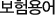

보험기본정보

- 가입연령
- 보험가입시 피보험자의 연령을 말하는 것으로 일반 연령이나 호적 연령과 차이가 있을 수 있으며, 보험의 종류에 따라 제한되어 있다. 그러나 이것은 회사나 상품에 따라 차이가 있어서 일정하지 않으며, 보험연령 계산에 의해 정해진다.
보험연령은 계약자와 피보험자의 경우 가입 연월일에서 생년월일을 빼고, 1년 미만의 단수가 있을 때에는 6개월 미만은 버리고, 6개월 이상은 1년으로 계산한다.
- 가입자격
- 생명보험을 계약하는 데 있어서 보험계약자나 피보험자가 될 수 있는 자격을 말한다.
피보험자는 반드시 자연인이어야 하며, 상법 732조에서는 15세 미만자, 심신 상실자, 심신 박약자를 피보험자로 하는 사망보험계약을 금지하여 가입자격을 제한하고 있다.
- 간이 생명표
- 인구 동태상의 사망자 수와 추계 인구에 의해 연령별로 계산한 생명함수를 기초로 해서 작성한 사망 및 생존율 표로써, 수년 간격으로 행하여지는 국세 조사의 결과를 정리하여 국민생명표를 연령별로 작성할 수 있다.
- 개호비용
- 개인이 재해나 노령 등으로 인해 혼자의 힘으로는 정상적인 일상생활을 할 수 없는 장해상태(예: 식물인간, 사지마비, 치매상태 등) 가 되는 경우의 각종 치료비용과 가정간호를 받기 위해 소요되는 비용 등을 말한다.
- 거절체
- 정상피보험체인 표준체에 비하여 보험사고의 발생위험 정도가 너무 높거나 위험정도의 평가가 불가능하여 보험 계약이 성립될 수 없는 피보험자를 말한다.
- 건강진단
- 보험가입시 보험회사가 정한 의사(사의, 촉탁의)가 피보험자의 건강상태를 진단하는 것을 말하며, 건강진단 결과에 따라 보험회사는 청약된 계약의 승낙여부를 결정한다.
- 경과보험료
- 보험계약에 있어서 보험년도와 보험회사의 사업년도가 일치하지 않으므로, 그 보험년도에 해당한 보험료 중 일부는 당해 사업년도에 해당되고, 나머지 일부는 차기 사업년도의 일부에 해당된다. 이 때 차기 사업년도의 일부에 속하게 되는 보험료를 미경과보험료라 하고, 결산기일에 준비금으로 적립하게 된다. 이에 대하여 이미 경과된 기간(보험금 지급책임이 경과된 기간)에 해당하는 보험료를 경과보험료라 한다.
- 계약일
- 계약을 위한 청약서를 작성한 날을 의미하고, 계약일과 유사한 계약체결일은 제1회 보험료를 납입한 날을 의미한다.
그러나 청약서를 작성함과 동시에 제1회 보험료를 납입하는 것이 관례이므로, 계약일과 계약체결일은 같은 의미로 쓰이고 있다.
- 계약의 부활
- 해지된 보험계약이라 할지라도 해약환급금을 받지 아니한 경우, 일정기간(2년) 내에 연체된 보험료와 예정이율+1% 범위 내에서 각 상품별로 회사가 정한 이율로 계산한 금액을 가산하여 납입하고, 회사가 이를 승낙하면 계약을 원래의 상태로 회복할 수 있는 제도를 말한다.
- 계약적부 확인
- 일반적으로 계약성립 과정을 보면 모집인에 의한 제1차 선택, 진단의의 건강진단에 의한 제2차 선택, 사정 및 결정의 보험회사의 제3차 선택으로 나누어 볼 수 있다. 이러한 과정에서 피보험자의 과거 병력이나 현재의 자각 증상 등에 대해 피보험자의 청약서에 정확하게 기재하지 않은 경우에는, 피보험자가 위험을 정확하게 판단하기 어렵다.
그래서 불량 계약이나 역선택를 방지하고, 계약 후의 분쟁을 사전에 방지하기 위해서 피보험자의 생존 중에 실시하는 계약선택을 "계약적부 확인" 이라고 한다.
- 고지의무
- 고지의무란 보험계약 당시에 보험계약자, 피보험자 및 그의 대리인이 보험자에게 중요한 사실을 알리고, 중요한 사실에 대하여 잘못 알리거나 알리지 않으면 안 되는 의무를 말한다.
- 공영보험
- 국가, 지방자치단체 또는 기타 공법인에 의하여 경영되는 보험이다. (국민건강보험, 산업재해보상보험 등)
- 공적부조
- 공적 부조는 국민의 생존권 보장에 기본 이념을 두고 있으며, 생활 유지의 능력이 없거나 생활이 어려운 자에게 필요한 보호를 행하여, 최저생활을 보장하고 조성함으로써 사회복지의 향상에 기여함을 목적으로 한다.
- 국민연금
- 국민연금은 국민의 노령ㆍ고도의 장해 또는 사망에 대해 연금급여를 실시하여 생활안정과 복지증진을 목적으로 1988년 1월부터 실시하고 있는 대표적인 연금보험이다. 가입대상은 국내거주 18세 이상 60세 미만의 국민이며, 공무원연금법ㆍ군인연금법ㆍ사립학교교원연금법의 적용을 받는 공무원, 군인 및 사립학교교직원, 기타 대통령령에 정한 자는 제외된다.
- 국민 생명표
- 국민 전체 인구의 제 통계를 기초로 작성된 생명표를 국민사망표 또는 국민생명표라 한다.
이것은 어느 기간 내의 인구 동태 통계로부터 얻어진 연령별 사망자 수를 그 기간 내에 이루어진 국세 조사에서 나타난 연령별 인구로 나눈 결과를 작성한 것이다. 국민사망표는 남녀별로 0세~100세까지 작성한 것이 일반적이며, 동태, 정태의 양 통계를 사용하여 사망표를 작성한 것은 1815년 영국의 Milne가 시초였다.
- 낙성계약
- 낙성계약이란 계약 당사자의 의사 표시 합치만으로 효력이 발생하는 계약을 말하며, 특별한 방식을 요하지 않는다.
보험계약도 낙성계약이다. 생명보험계약은 보험자와 보험계약자 간의 계약 내용에 관한 합의, 즉 계약의 청약과 승낙의 사실이 있으면 성립되며, 그 외에 아무런 형식을 요하지 않는다.
- 납입기일
- 보험료의 납입기일은 제2회 이후의 보험료 납입의 기준일이며, 보험료 납입의무 이행 시기를 의미한다.
- 납입유예기간
- 보험계약은 보험료를 납입기일까지 납입하여야만 계약의 효력이 발생한다. 그러나 어떠한 사정으로 보험료를 납입기일까지 납입하지 않더라도 보험계약의 효력이 소멸되지 않고, 일정 기간내에 보험료를 납입하면 그 계약의 효력이 계속된다.
이와 같이 보험료가 납입되지 않은 채 그 계약의 효력이 존속하는 기간을 유예기간이라 한다.
- 단체보험
- 종업원(또는 단체의 구성원)의 복리후생을 위하여 기업(또는 단체)의 대표자를 계약자로 하고 종업원(또는 단체의 구성원)을 피보험자로 하여, 종업원(또는 단체의 구성원) 전체를 무진단으로 일괄해서 맺는 생명보험계약을 말한다. 생명보험회사는 계약체결 및 유지에 따른 비용을 절감할 수 있어 개인보험에 비해 보험료를 저렴하게 책정할 수 있다.
- 도덕적 위험
- 도덕적 위험이란 실체적이나 현실적으로 관찰할 수 없는 경우로, 손실 가능성을 유발하거나 증가하게 하는 개인의 주관적, 심리적, 정신적 특성을 말한다. 이는 피보험자나 보험계약자 등 개인의 성품, 성격 등으로 인하여 고의로 손실을 일으키거나 우발적으로 발생한 손실의 정도를 증대시키는 성향을 말한다. 그러므로 도덕적 위험의 측정은 매우 어려운 과제이며, 피보험자에 대한 고의의 살인이나 상해 등이 여기에 속한다.
- 대수의 법칙
- 적은 규모 또는 소수로는 불확정적이나 대규모, 다수로 관찰하면 거기에 일정한 법칙이 있게 되는데 이를 대수의 법칙이라고 한다. 사람의 사망에 관해서도 어떤 특정인이 언제 사망할 것인지 예측할 수는 없으나, 많은 사람들을 대상으로 해서 관찰해 보면 매년 일정한 비율로 사망하는 것을 알 수 있게 된다. 이 경우를 사망률에 관한 대수의 법칙이라 한다.
- 대리점 제도
- 보험대리점이라 하면 보험사업자를 위하여 보험계약의 체결을 대리하는 자를 말한다.
- 라이프사이클(Life-cycle)
- 보험료의 납입기일은 제2회 이후의 보험료 납입의 기준일이며, 보험료 납입의무 이행 시기를 의미한다.
- 납입유예기간
- 사람의 출생시부터 사망시까지의 표준적인 가정생활을 살펴보면 "출생 →성장 → 결혼 →육아 →노후"의 과정을 거치게 되는데 이를 라이프사이클(인생주기 또는 생활주기) 이라고 한다.
- 만기보험금
- 생명보험의 계약에서 생존보험 또는 생사혼합보험인 경우에는 보험기간의 만기가 도래하면 만기보험금이 지급된다.
만기보험금은 피보험자가 만기까지 생존해 있다는 사실(보험사고)을 조건으로 한 생존보험금이라고 할 수 있다.
- 만기연령
- 보험계약이 만료되는 시기에 있어서 피보험자의 연령을 만기연령이라 한다.
- 만기환급금
- 장기의 적립형 보험에 있어서 보험기간이 만료될 때까지 일정 규모 이상의 사고가 없는 경우 납입보험료 중 일정률의 금액을 보험계약자에게 환급하는 제도이다. 환급금은 납입한 보험료에 포함된 적립보험료를 운용한 예정이자와 원리금의 합계액에 상당한다.
- 무배당보험
- 계약자 배당이 없는 대신에 보험료가 저렴한 보험을 의미한다. 즉 보험료 산정의 기초가 되는 예정위험률, 예정이율, 예정사업비율의 안전도를 가능한 축소하여, 예정률과 실제율의 차이를 사후적인 배당으로 정산하는 대신에 보험료 산출시에 미리 보험료를 할인하는 보험이다.
- 민영보험
- 개인 또는 민간법인이 소유하고 경영하는 보험기업 형태를 말하며, 사영보험이라고도 한다. 민영보험에는 영리 목적인 개인기업조직, 주식회사조직, 비영리적인 상호회사조직, 협동조합 등 네 가지가 있는데 우리나라 보험업법에서는 주식회사 또는 상호회사에 한해서 보험사업을 영위토록 규정하고 있다.
- 변액보험
- 보험계약자가 납입하는 보험료 중 저축보험료를 따로 분리하여 주식이나 국채, 공채, 사채 등 수익성이 높은 투자대상에 투자하여, 그 투자수익을 보험 계약자의 환급금(해약환급금 또는 만기환급금)에 반영하는 한편, 투자수익의 성과에 따라 보험금 지급사유 발생시 지급되는 보험금액이 변동되는 보험을 말한다.
- 보험계약자
- 보험에 가입하는 사람으로서 보험회사와 자기의 이름으로 계약을 체결하고 보험료 납입의 의무를 지는 사람이다.
- 보험금액
- 보험계약이 만료되거나 피보험자가 보험사고를 당하였을 경우 보험회사가 보험수익자에게 지급하는 금액을 말한다.
- 보험기간
- 보험회사는 보험계약에 따라 어떤 일정한 기간내에 발생한 보험금 지급사유에 대하여 보험금을 지급할 책임을 진다.
그 일정기간이 보험기간이며 위험기간 또는 책임기간이라고도 한다.
- 보험료 납입최고기간
- 보험료가 납입되지 않은 채 납입기일이 경과되었을 경우 납입기일로부터 납입기일이 속하는 달의 다음달 말일까지를 납입최고기간으로 하여, 그 기간내에 보험료가 납입되면 그 계약을 유효하게 계속시킨다.
- 보험료
- 보험계약자가 보험계약에 따라 보험회사의 위험부담에 대한 대가로 보험회사에 납입하는 금액으로서, 이것은 보험금 지급을 충당하기 위한 순보험료와 사업을 영위하는데 필요한 부가보험료로 구성된다.
- 보험사고
- 보험계약에 따른 보험금의 지급의무를 구체화한 사고를 말한다. 따라서 보험금의 지급 대상이 아닌 사고는 보험사고라 할 수 없다. 보험사고가 되려면 두 가지의 충족요건이 있어야 하는데 첫째, 사고발생의 개연성이 존재해야 하며, 둘째, 사고에 따른 손해액을 상당한 수준에서 예측할 수 있어야 한다.
- 보험수익자
- 생명보험계약을 체결한 후 피보험자의 보험사고(사망ㆍ고도의 장해 등)가 발생할 때 보험금을 수취하는 지위에 있는 사람을 말한다. 이는 계약체결시 미리 지정하는 수도 있고, 미지정시에는 상속인이 수익자가 되기도 한다.
- 보험약관
- 보험회사와 계약자 간의 권리의무를 규정하여 약속해 놓은 것을 말한다. 다수의 보험가입자가 집단을 형성, 조직되어 있기 때문에 개개인마다 서로 내용이 다른 보험계약을 체결하기는 사실상 불가능하며, 따라서 보험회사는 미리 계약의 조건ㆍ내용을 정한 약관을 작성하여 누구나 공평한 조건으로 계약을 체결할 수 있도록 하고 있다.
- 보험업법
- 보험업법은 1962년 1월 15일 법률 제 973호로 제정되었으며, 보험사업을 효율적으로 지도ㆍ감독하고 보험계약자, 피보험자, 기타 이해 관계인의 권익을 보호하여 보험사업의 건전한 육성과 국민경제의 균형있는 발전에 기여할 목적으로 제정하였다.
보험사업의 감독 법규와 보험사업을 영위하는 자의 조직 및 그 행위에 관해 규정하고 있다.
- 보험자
- 보험회사를 말하는 것으로 보험사고가 발생하였을 때 보험금을 지급할 책임을 지는 자를 말한다.
- 보험중개인
- 특정 보험회사에 소속되지 않고 불특정 다수의 계약자 및 보험회사를 위하여 독립적으로 보험계약의 체결을 중개하는 자를 말한다.
- 보험증권
- 보험계약의 성립과 그 내용을 증명하기 위하여 보험회사가 작성, 기명날인하여 보험계약자에게 교부하는 증서를 말한다.
- 부가보험료
- 보험사업을 운영하는데 있어 순보험료 이외에 계약관리를 위한 비용, 설계사에 대한 수수료, 광고, 선전 등 사업운영에 필요한 비용을 말한다.
- 비차익
- 예정사업비율에 의한 사업비보다 실제 사용한 사업비가 적게 사용되었을 때 발생하는 이익을 말한다.
- 사망률
- 어느 특정한 집단의 구성원이 어느 기간내(보통 1년 동안)에 사망하는 비율을 말한다.
- 사망보험
- 일반적으로 피보험자의 사망을 보험사고로 하여 보험금을 지급하는 보험을 말한다. 사망보험에는 계약한 때부터 일정기간을 보장하는 정기보험과 계약이 성립된 이후 피보험자의 일생을 보장하는 종신보험이 있다.
- 사업비
- 보험사업을 수행하는데 소요되는 비용을 말한다. 따라서 투자비용은 포함하지 않는 것이 원칙이다. 생명보험에 있어서 사업비의 내역은 신계약비, 유지비, 수금비로 분류한다.
- 사차익(손)
- 사망보험 혹은 생사혼합보험에 있어서 실제 사망률이 보험산출의 기초가 된 예정사망률보다 낮거나(익) 높은(손) 경우에 생기는 수익(손해)을 말한다.
- 상해보험
- 피보험자가 우연한 외부적인 요인에 의한 사고로 인하여 신체상의 상해를 입어 그 결과 사망 또는 불구 등이 되거나 치료를 받아야 할 경우에 사망보험금, 장해보험금, 치료비 등을 지급하는 보험을 총괄한 것이다.
- 생존율
- 어느 특정 집단 가운데 어느 일정 기간 동안 생존하는 사람의 비율을 생존율이라고 한다. 생명보험의 경우, 통상 같은 연령의 사람이 1년간 생존하는 확률을 말한다.
- 생명보험
- 사람의 사망 또는 일정한 연령까지 생존시 약정한 보험금을 지급하는 보험이며, 이는 노후의 생활비, 사망 후 유가족의 생활보호를 위한 자금 등을 마련하기 위해 이용된다.
- 생명표
- 어느 집단의 생사에 관한 사항을 생명함수에 의하여 계량적으로 표시한 것으로서, 사망표라고도 하나 생명표라고 하는 편이 넓은 의미를 포함하고 있어 통상적이다. 이는 대수의 법칙을 기초로 하여 연령별 생사잔존 상태를 나타내는 방법을 쓴다.
- 생사혼합보험(양로보험)
- 피보험자가 계약성립 후 일정한 연령에 달하기 전에 사망한 경우 뿐만 아니라, 일정 연령까지 생존한 경우에도 약정된 보험금을 지급하는 보험이다.
- 생존보험
- 피보험자가 어느 일정기간까지 생존하고 있는 것을 사유로 해서 보험금을 지급하는 계약을 의미한다. 따라서 피보험자가 사망했을 때에는 보험금은 물론 납입한 보험료도 환급되지 않는다. 그러나 현재 우리나라에서 판매되고 있는 생존보험은 보험기간 중, 사망시에도 사망급여금을 지급하기 위하여 각종 사망보장이 부가되어 판매되고 있다.
- 생명보험 설계사
- 생명보험회사를 위하여 생명보험계약의 체결을 중개하는 자로서, 보험업법상으로는 생명보험 모집인이라고 한다.
- 설계판매
- 고객이 필요로 하는 경제준비를 정확히 파악하여 그 필요를 만족시키는데 가장 적합한 보험상품을 권유하여 판매하는 방법이다.
- 수금비
- 생명보험사업을 영위하는데 있어서 제1회 이후의 보험료를 수금하는데 소요되는 일체의 경비를 수금비라고 한다.
- 순보험료
- 영업보험료중 예정위험률과 예정이율에 의해 산출된 부분으로서 장래 보험금 지급의 재원이 되는 보험료이다.
순보험료는 위험보험료와 저축보험료로 구분된다.
- 승낙
- 보험계약 희망자가 보험계약을 청약하였을 때 보험회사가 청약내용을 검토한 후 보험계약의 청약을 받아들이는 것을 말한다.
승낙은 통상 보험증권을 교부함으로써 이루어진다.
- 실효 또는 해약
- 보험계약의 효력상실을 보험업계에서는 단지 실효라고 약칭한다. 보험계약법 또는 보험약관에 의해서 실효되는 경우는 당사자의 의사 표시 없이 회사가 일반적으로 실효를 시키는 경우가 많다.
- 수지상등의 원칙
- 수지상등의 원칙이란 보험 경영상 중요한 기술로 보험계약에서 앞으로 수입이 될 순보험료의 현가 총액이 앞으로 지출해야 할 보험금 현가의 총액과 같게 되는 것을 말한다. 여기에서 수지가 같아진다는 것은 다수 동일 연령의 피보험자가 같은 보험의 종류를 동시에 계약했을 때, 보험기간 만료시 수입과 지출의 균형이 잡혀지도록 순보험료를 계산하는 것을 의미한다.
- 약관대출
- 보험약관에 의한 대출로 해약환급금 범위 내에서 보험계약자에게 대출해주는 것이며, 대출금이 변제되지 않을 경우 보험자가 지급하여야 할 금액에서 이를 공제하고 지급한다.
- 역선택
- 보험금지급사유 발생확률이 높은 위험을 갖고 있는 사람이, 자진하여 보험금 수령을 목적으로 가입함으로써 보험회사가 불리해지는 경우이다. 역선택에 의한 위험이 동일 보험단체에 집중되면 대수의 법칙에 의한 수지상등의 원칙이 무너져, 보험사업 경영의 기초에 영향을 미치게 되므로 보험회사는 역선택 방지에 노력하고 있다.
- 영업보험료
- 보험계약자가 보험사업자에게 납입하는 보험료를 말하는데, 이는 순보험료와 부가보험료로 구성되어 있다.
- 예정사업비
- 보험회사가 사업을 추진하는데 있어서 여러가지 비용이 들게 되므로 이 비용을 미리 책정하여 일정한 비율로 영업보험료에 계산해 넣는데 이 비율에 의해 계산된 사업비를 말한다.
- 예정사망률
- 보험료 계산의 기초에 적용되는 특정생명표의 연령별 사망률을 의미하여 기초사망률이라고도 한다.
예정사망률은 과거의 사망통계를 기초로 하여 대수의 법칙에 따라 산출된다.
- 예정이율
- 생명보험은 보통 장기에 걸친 계약이므로 계약자와 보험회사간에 수수되는 보험료에 의한 이자의 요소를 무시할 수 없다.
따라서 산출시 자산운용에 따라 기대되는 수익을 예상하여 미리 할인하여 준 율을 예정이율이라고 한다.
- 위험율차익
- 사망보험 등에 있어서 실제위험률이 보험산출의 기초가 된 예정위험률보다 낮은 경우에 발생하는 이익을 말한다.
- 위험보험료
- 순보험료중 사망보험금, 장해보험금 등 생명보험에서 보장하는 각종 위험 보험금의 재원이 되는 보험료 부분을 말한다.
- 1급장해
- 질병 또는 재해로 인하여 신체장애가 영구히 남아 신체의 기능이 완전히 상실 또는 현저하게 감소한 상태를 말한다.
- 자연보험료
- 연령별 사망률에 기초를 두고 1년마다 수지의 균형을 이루도록 계산한 보험료를 뜻한다. 따라서 사망률은 연령이 많아질수록 높아지기 때문에, 매년 갱신조건부 1년 정기보험에 가입할 경우 자연보험료 금액은 매년 커지게 된다. 자연보험료를 택하는 보험종류는 단체정기보험이나 재보험과 같은 특수한 보험에 한정되어 있다.
- 주계약
- 보험금 등의 지급사유는 발생했으나 보험금에 대한 분쟁 또는 소송으로 인해 지급이 완료되지 않은 금액 등으로 지급이 확실시되는 금액을 말한다.
- 지급준비금
- 보험금 등의 지급사유는 발생했으나 보험금에 대한 분쟁 또는 소송으로 인해 지급이 완료되지 않은 금액 등으로 지급이 확실시되는 금액을 말한다.
- 책임개시일
- 책임개시일은 보험회사의 보험금 지급 책임개시일을 말한다. 즉, 보험회사가 보험계약의 청약을 승낙한 경우 보험금의 지급책임을 지게 되는 시작일을 의미한다. 책임개시일은 무진단계약과 진단계약에 차이가 있다.
- 책임준비금
- 보험약관에 정한 제 지급조건의 이행을 위해 장래 있을 사망, 만기보험금 등의 지급을 위하여 순보험료를 예정이율로 증식, 적립한 금액을 말한다.
- 청약
- 보험계약상 계약자가 보험자인 보험회사에 대하여 일정한 보험계약을 맺을 것을 목적으로 하여 행하는 일방적인 의사표시를 말한다. 보험계약상의 청약은 보험계약 성질상 보험가입 희망자로부터 보험자인 보험회사가 작성한 청약서에 의해서 이루어지고 있다.
- 초회보험료
- 보험계약은 보험계약자의 청약에 대해 보험회사가 승낙함으로써 성립한다.
보험계약이 성립하면 보험계약자는 보험료 납입의무를 지는데 이 의무에 의해 최초로 납입하는 보험료를 초회보험료라 한다.
- 친권자
- 친권자란 혼생자의 경우 혼인 중인 부모가 공동으로 되지만 이혼한 경우에는 부만이 친권자가 된다. 혼외자의 경우에는 인지를 한 부와 적모가 공동으로 친권자가 되고, 인지를 한 부모와 모가 없을 경우에는 생모가 친권자가 된다.
- 특약
- 자연보험료의 경우 매년 사망율이 증가함에 따라 노년에 이르러서는 보험료 납입이 거의 불가능한 상태로 금액이 커지게 된다.
이러한 보험료 납입의 부담을 없애기 위해 자연보험료의 총액을 전 보험기간에 균등하게 할당하여 평준화한 것을 말한다.
- 평준보험료
- 자연보험료의 경우 매년 사망율이 증가함에 따라 노년에 이르러서는 보험료 납입이 거의 불가능한 상태로 금액이 커지게 된다.
이러한 보험료 납입의 부담을 없애기 위해 자연보험료의 총액을 전 보험기간에 균등하게 할당하여 평준화한 것을 말한다.
- 피보험자
- 사람의 생과 사라는 보험사고 발생의 객체가 되는 사람을 피보험자라고 한다.
- 표준체계약
- 신체상, 도덕상, 기타 어느 면에서도 정확한 결점이 없기 때문에, 특별조건을 붙이지 않고 기준보험료로서 보험에 가입할 수 있는 계약을 말한다.
- 표준미달체계약
- 표준체로서 계약할 수 없는 결함체라 하더라도 그 단체내의 위험도가 균일하고 또한 충분히 큰 집단이라면, 사망의 발생이 정확하게 예측되므로 이 경우 특별보험료 적용이나 보험금 삭감 등의 조건을 붙여 계약을 하는데 이를 "표준미달체 계약" 이라 한다.
- 해약
- 계약자의 의사표시로 계약의 효력을 소멸시키는 것을 해약이라고 한다.
상법이나 보험업법에서 보험계약자는 보험금 지급사유 발생 전에 언제든지 보험계약을 해약할 수 있다는 규정을 두고 있다.
계약은 해약한 시점에서 소멸되고, 회사는 반환할 금액이 있으면 이를 해약환급금으로 계약자에게 지급한다.
- 해약환급금
- 보험계약의 해지로 보험금을 지급하지 않게 되었을 경우, 보험회사가 그 계약의 보험료 및 책임준비금 산출방법서에서 정하는 바에 따라 보험계약자에게 반환하는 금액을 말한다.
- 해지
- 보험계약자가 제2회 이후의 보험료를 납입하지 않고 일정한 보험료 납입최고기간이 경과하였을 경우에는 보험회사는 보험약관에 따라 납입최고기간이 끝나는 날의 다음날 보험계약을 해지한다. 해지는 계약의 효력을 장래에 향하여 소멸시키는 행위를 말한다.
- 확정배당금
- 확정배당금이란 생명보험상품의 예정이율이 공금리 수준보다 낮은 경우 그 금리의 차이를 보상해 주는 제도이다.
- 효력상실
- 보험료 납입유예기간이 경과했는데도 보험료를 납입하지 않으면 보험계약은 보험회사의 의사표시를 필요로 하지 않고 그 효력이 자동적으로 상실하게 되는데 이를 효력상실이라고 한다.